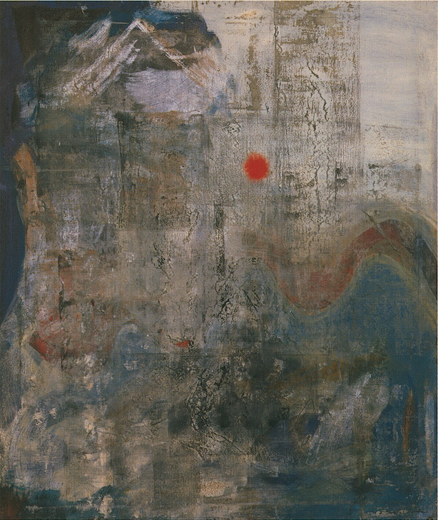
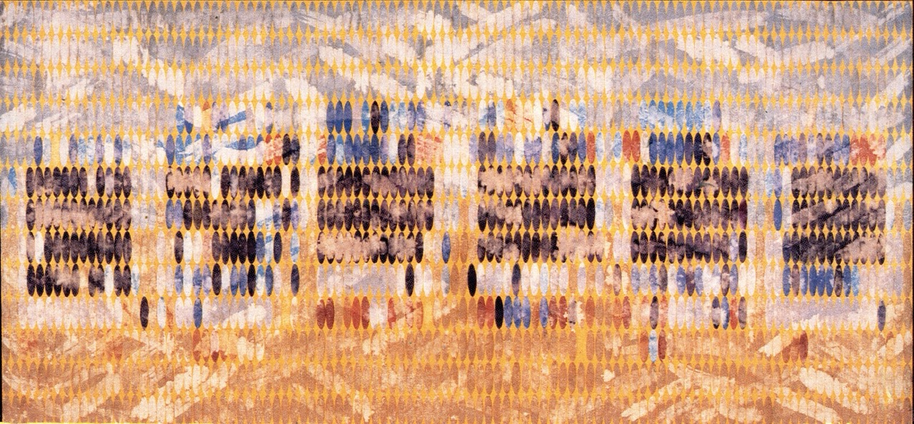

Arriving in Seattle in 1949, Okoshi began her part-time night studies with artists Fay Chong and Mark Tobey. While these two artists of the Northwest School influenced her early abstract expressionism, Okoshi's work developed in a different direction after she moved to New York in 1954. Settling in Greenwich Village, she lived on Patchin Place until 1978, when she moved to the newly-opened Westbeth Artist Housing on Bleeker Street. Below we show two representative works of hers: Ruins at Sunset, an oil painting done in 1960, and Plenum #83, a tryptich of the 1980s, representative of her later devotion to working with washi on canvas.
Ruins at Sunset

Photo courtesy of the Zimmerli Art Museum.
Plenum #83, of the Plenum and Persistent Light series

In the early 1960's, Okoshi first experimented with grids of ping-pong ball-like figures on canvas. During this period in New York she was in frequent company with Yayoi Kusama, the latter known for her wildly colored art with repeating circles. Kusama had also been from a once-wealthy family in Japan, and somehow had made contact with Okoshi in the early 1950's, with Okoshi welcoming Kusama at the Seattle port upon her first arrival in the US. As we can see above in Okoshi's Plenum #83, more colors take over from the dark smokiness of the earlier paintings, while contained through a structural grid of ovals. She would use this style of work in over 100 paintings from the 1970s to 2000, when ill health brought an end to her work.